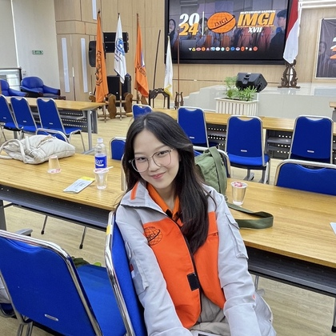

Founder
Founder

Michelle Hans Elviera
Founder(22/496861/SV/21031)
Mahasiswa D4 Teknologi Survei dan Pemetaan Dasar Universitas Gadjah Mada
Frequently Asked Questions
Frequently Asked Questions
Ruang Terbuka Hijau (RTH) adalah area atau kawasan yang digunakan untuk penghijauan, baik di kawasan perkotaan maupun pedesaan. RTH dapat berupa taman kota, hutan kota, kebun raya, dan area lainnya yang ditanami
vegetasi hijau. Tujuan utama RTH adalah menyediakan ruang untuk rekreasi, meningkatkan kualitas lingkungan, dan menjaga keseimbangan ekosistem.
Ruang Terbuka Hijau penting karena memberikan berbagai manfaat, antara lain meningkatkan kualitas udara dengan menyerap polutan dan menghasilkan oksigen, mengurangi suhu udara yang membantu mengatasi efek pemanasan
global, menyediakan ruang untuk rekreasi dan kegiatan sosial yang dapat meningkatkan kesejahteraan mental dan fisik masyarakat, menjaga keanekaragaman hayati dengan menyediakan habitat bagi flora dan fauna, serta
mengurangi risiko banjir dengan menyerap air hujan.
Masyarakat dapat berkontribusi dalam pelestarian Ruang Terbuka Hijau dengan menjaga kebersihan dan tidak membuang sampah sembarangan di area RTH, berpartisipasi dalam kegiatan penanaman pohon atau penghijauan,
menggunakan RTH dengan bijak dan tidak merusak fasilitas yang ada, mengedukasi orang lain tentang pentingnya RTH dan bagaimana menjaga keberlanjutannya, serta mendukung kebijakan pemerintah terkait pengembangan dan
pelestarian RTH.
Beberapa jenis Ruang Terbuka Hijau antara lain taman kota yang biasanya berada di pusat kota dan digunakan untuk rekreasi serta aktivitas sosial, hutan kota yang merupakan area luas ditanami pohon dan vegetasi lainnya
untuk menjaga keseimbangan ekosistem perkotaan, kebun raya sebagai area khusus untuk konservasi tanaman dan penelitian botani, jalur hijau yang biasanya berada di sepanjang jalan atau sungai dan berfungsi sebagai
pemisah serta pelindung lingkungan, serta taman lingkungan yang lebih kecil dan biasanya berada di sekitar pemukiman atau perkantoran.
Pemerintah memiliki berbagai kebijakan untuk mengembangkan Ruang Terbuka Hijau, antara lain mewajibkan setiap kota memiliki minimal 30% dari total luas wilayah sebagai RTH, mendorong pembangunan taman-taman baru dan
rehabilitasi taman yang sudah ada, memberikan insentif bagi pengembang yang mengintegrasikan RTH dalam proyek mereka, mengadakan program penanaman pohon massal dan kampanye lingkungan, serta mengeluarkan peraturan dan
regulasi untuk melindungi RTH dari alih fungsi lahan yang tidak sesuai.